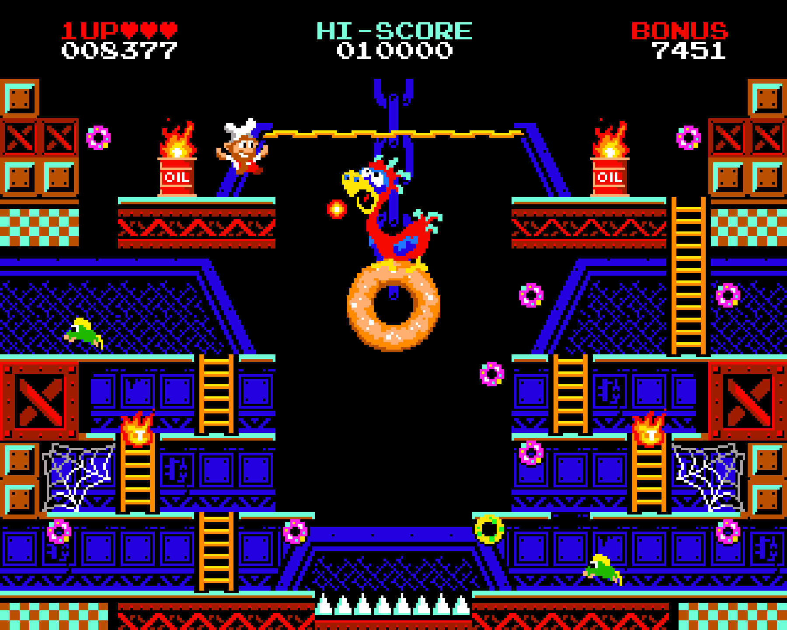

Written 2-21-2023
Over this last weekend I picked up a game called Donut Dodo at the recommendation of @cmuratori on twitter. Apparently it's a gone but not forgotten arcade game from 1984 that plays sort of like a clash between Donkey Kong and Burgertime. I played it for a couple of hours and figured I'd chronicle some of my feelings.
The game is super short. You can do a playthrough in ~5 minutes if you get the rhythm down. The twist to this is that, once you beat it, the game loops, adding more obstacles for the next play through. I never got to the third loop, but the second loop adds PacMan style ghosts that move from one side of the screen to the next, about once every 30 seconds. This is sort of a light rouge-like aspect to this, reinforcing the idea that most rogue-likes are more derived from arcade than Rogue.
There are 5 levels, each a single screen, which contain ~15 donuts. Add on some fireballs, green mice, and a bloodthirsty toilet and that's pretty much a level. Here's a screenshot of the second level:

The game keeps a sense of novelty by giving each level it's own theme (factory, candy shop, circus) and a gameplay gimmick. Here's a list of the levels and one or two of their gimmicks:
- Level one is the most plain of all the levels, but in some ways that makes it the most impressive. Upon entering this first level the player is introduced to all the basic mechanics, all without any sort of tutorial, so this first level does a couple interesting things. First, the ladder to the Dodo's donut doesn't appear till you collect all the smaller donuts, indicating to the player that (1) you need to collect all the donuts and (2) after you do that you collect the large donut, which gets all shiny at the end. By the end of this first level, you understand all the objectives and now the next levels can start to play around with things.
- Level two is where more of the speedrunning aspect of the game is shown off. In the first level, order doesn't matter near as much since you can easily switch up your path. This is made possible by the symetric ladders and connected 3rd and 1st floors (meaning you can move to either side of the map from multiple floors. Level two switches things up, making it so the top level is only accessible from the right side of the map, but removing the 1st floor ladder from the right side. This asymmetry is bound to suck up some quarters as the player has to stop and think how exactly he can even get to some parts of the map. Level two also introduces fire guys, that act as Donkey Kong barrels, and what I'll call the rope, which you can shimmy across. The asymmetry is also used to introduce the rope, since there is a part of the map which is clearly inaccessible without it.
- Level 3 has moving platforms on a ferris wheel and balloons that you have to dodge when moving off and on the ferris wheel. The balloons follow a pretty strict path which makes it hard to get killed while you're on the ferris wheel.I think this enemy serves as an example of how this game, while hard, isn't poorly designed, despite being an old arcade game.
- Level 4 introduces ropes you can climb vertically on and a horizontally moving platform. This level, like 2 and 3, serves as a good example for how mechanics from past levels are combined with a new mechanic all at once. There's no gradual introduction to mechanics, unlike mario, where by the end of a mario level you should have been exposed to a mechanic at 3, or so, varying skill levels. Here the final version of the mechanic is shown off, and it's up to you to understand and get over it. Level 4's ropes also feel pretty good to move around on which I feel is because of the level of control you're given on them. There's no sliding in any direction and movement horizontally is digital in a way that makes moving out of the way of fireballs satisfying.
- Level 5...
With all this in mind its also worth mentioning that there's never any real tutorial outside of the border, stylized to mimic the border of a standup arcade machine, which includes the basic controls. But of course, after a glance at those controls, I wouldn't be surprised if the average (modern) player doesn't test other commonly used buttons to see if there're any unmentioned action buttons. They would however be wrong. The input is restricted to:
- Up, which allows you to go up ladders
[Talk about movement]
[Falling feels a little weird (kinda puts you in a panic)]